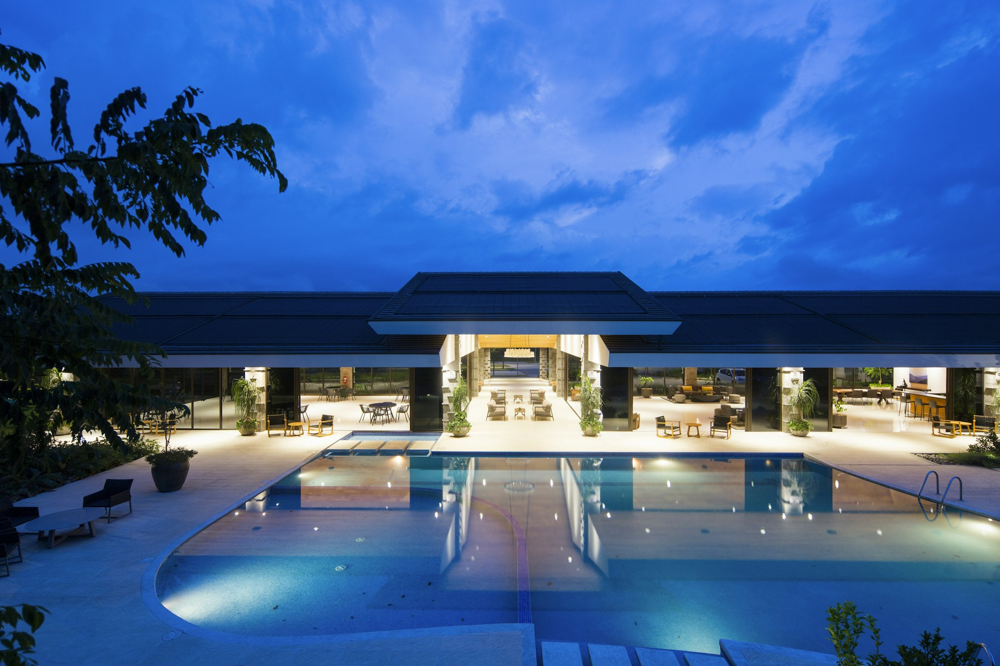

澳根尼橄欖油展示牆
澳根尼 (AUGANIC) 的名稱源自「澳洲有機」，我們特別從澳洲進口高品質橄欖油，在會館內設立專業展示牆，向訪客介紹橄欖油的種類、產地、製作過程與品質差異。
專業橄欖油知識解說
橄欖油品嚐體驗
特選橄欖油選購
* 每日10:00-18:00開放參觀，可向前台預約專人導覽
大聲歡唱 KTV
會館特別設置了舒適的KTV包廂，配備專業音響設備與最新點歌系統。無論您是高歌一曲還是與親友同歡，都能在此盡情釋放，讓美妙歌聲伴隨您的宜蘭之旅。
專業音響設備
上萬首中英文歌曲
舒適包廂環境
* 住客享有每日2小時免費使用權，額外時間需另行付費

泡茶、喝酒
在會館的茶室與酒吧區，我們提供精選的台灣高山茶與各國特色酒品。您可以在寧靜的環境中品茗，或是在輕鬆的氛圍下小酌，與親友共度悠閒時光。
台灣精選茶品
各國特色酒類
專業沖泡服務
* 茶室開放時間：10:00-22:00，酒吧開放時間：18:00-23:00

看球賽
會館設有配備大型液晶電視的休息室，提供各種體育賽事直播。無論是足球、籃球還是棒球，您都能與志同道合的朋友一同觀賞，享受賽事的刺激與樂趣。
65吋4K液晶電視
國際體育頻道
舒適觀賞空間
* 主要賽事會提前公告，住客可預約席位

樓下火鍋店
會館樓下設有特色火鍋店，提供新鮮食材及獨特湯底。使用宜蘭在地食材，結合創新料理手法，為您帶來美味的用餐體驗。會館住客享有特別優惠，讓您的味蕾也能感受宜蘭的獨特魅力。
宜蘭在地食材
特色湯底
住客9折優惠
* 營業時間：11:30-14:30, 17:30-22:00，建議提前預約